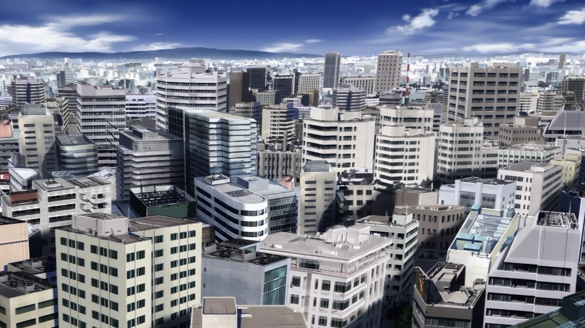

Who is "One-Punch Man?"
One-Punch Man started as a webcomic by Japanese manga artist ONE in 2009 It has since evloved into a manga and anime series starring the titular character Saitama, a.k.a. "One-Punch Man"! As the name would lead you to believe Saitama is mainly characterized by one thing, every fight he gets into is over in just one punch. While this sounds amazing in reality it leads Saitama to become bored with fighting and really just existence in general. If you have no challenges to overcome, no room to grow, then what fun is there in trying? Throuhgout the story Saitama meets and sometimes teams up with other heroes. By working together Saitama begins to understand what being a hero really is, it isn't always as simple as just kill the monster!
What kind of madhouse is this?
The setting of One-Punch Man is an alternate reality Japan split into multiple cities. The cities are given a letter from A-Z (City Z is pictured above) which helps the heroes keep territories they are responsible for. In addition heroes are assigned a "class" that will give bystanders an idea of their general ability and how much you can expect them to help. They are as such-
- S-Class: The best of the best, sometimes a single S-Class will be responsible for protecting multiple cities at a time
- A-Class: Exceptionally capable heroes. They can at least hold their own against most threats. Much more willing to work as a team than S-Class.
- B-Class: These are powerful heroes, but not as strong as the classes above them. Sometimes they will also just have a very niche ability that is useful, but not in many situations.
- C-Class: Mildly powerful to civilan level heroes. These heroes are usually tasked with evacuation of cities and transport of supplies, not so much fighting.